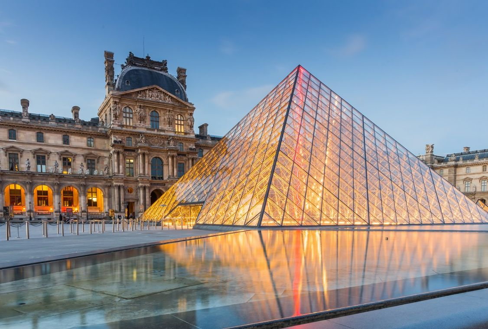

荷比法經典10日遊

📍 地點：荷蘭、比利時、法國
📅 天數：10天9夜
💰 價格：NT$ 100,900 起
行程內容
Day 1｜抵達阿姆斯特丹
- 抵達阿姆斯特丹，專車接送至飯店
- 晚上自由活動，可漫步運河欣賞夜景
Day 2｜阿姆斯特丹觀光
- 參觀梵谷博物館
- 遊覽安妮之家及運河景觀
Day 3｜荷蘭花田與風車村
- 前往庫肯霍夫花園欣賞鬱金香
- 造訪風車村，拍攝典型荷蘭景致
Day 4｜比利時布魯日古城
- 參觀布魯日古城與運河
- 品嚐比利時巧克力與啤酒
Day 5｜布魯塞爾與古城巡禮
- 遊覽布魯塞爾大廣場與小尿童雕像
- 參觀比利時皇家美術館
Day 6｜法國巴黎
- 前往巴黎，參觀羅浮宮
- 欣賞巴黎鐵塔與塞納河景色
Day 7｜巴黎三遊船與市區觀光
- 乘坐塞納河三遊船欣賞城市景觀
- 漫步香榭麗舍大道與凱旋門
Day 8｜法國世界遺產巡禮
- 參觀巴黎近郊世界遺產地點
- 深入了解法國歷史文化
Day 9｜自由活動與購物
- 自由安排市區觀光或購物行程
- 可選擇參加戶外景點或美食巡禮
Day 10｜返回台灣
- 早餐後前往機場
- 搭乘班機返回台灣